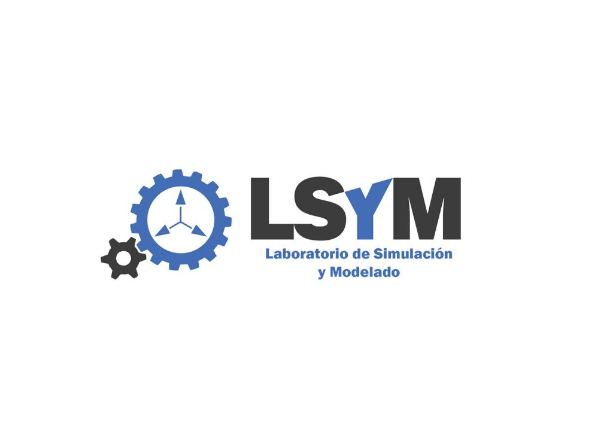

Summary
I currently work at Simodar, the brand of LSyM (Laboratorio de Simulación y Modelado), a research group from the Institute of Robotics and Information and Communication Technologies (IRTIC) at the University of Valencia. We develop training simulators that let operators learn heavy machinery safely, with no risk to people, machines or the environment.
- Harbour simulators: Ship-to-shore cranes, RTG cranes, mobile harbour cranes, reach stackers and straddle carriers for port operations.
- Quarry and mining simulators: 360º excavators, mining trucks, wheel loaders, bulldozers and graders.
- Construction simulators: Tower cranes, telehandlers, backhoes and more.
- Farm simulators: Farming tractors and harvesters.
- Warehouse simulators: Forklifts and high-capacity forklifts.
Technology
The simulation core is built in C++. Rendering runs on OpenSceneGraph (OSG) on top of OpenGL, physics simulations use NVIDIA PhysX for realistic machine behaviour, contact and materials handling, wxForms powers the UI, FMOD handles audio, and OpenXR is used for virtual reality support. The whole stack is developed in-house, from the virtual environments to the instructor tools used to track operator performance.